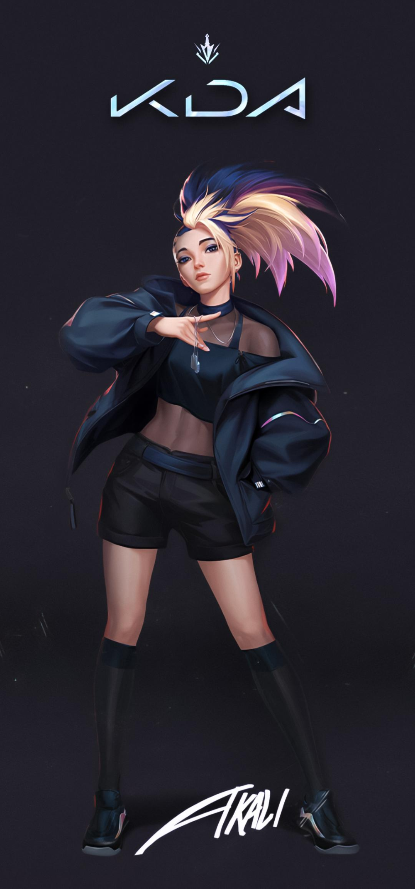

Akali

Ionia mindig is a vad mágia földje volt, amelynek életszerető népe és hatalmas szellemei a harmonikus
együttélésre törekednek… Néha azonban ez a békés egyensúly nem egykönnyen érhető el. Nem árt tehát
figyelemmel kísérni az alakulását.
A kinkou rend Ionia szent egyensúlyának önjelölt őre. Hű szolgái a szellemi és az anyagi világot járják,
hogy elsimítsák a felmerülő viszályokat, vagy ha kell, erővel közbeavatkozzanak. A kinkou szülötte Akali,
Mayym Jhomen Tethi lánya, aki az Árnyék ökleként vált ismertté. Mayym és párja, Tahno a rend közösségében
nevelték fel lányukat, Kusho nagymester, az Alkony szemének vigyázó tekintete előtt.
Amikor szüleit elszólította a kötelesség, a rend többi tagja jelentette Akali számára a családot. Kennen, a
vihar szíve sok időt töltött a fiatal lánnyal, megtanította a dobócsillaggal bánni, és megmutatta neki, hogy
a gyorsaság és a szívósság győzedelmeskedhet az erő felett. Akali koraérett gyermek volt, és szivacsként
szívta magába a tudást. Hamarosan mindenki számára egyértelművé vált, hogy szülei nyomdokaiba fog lépni, és
a nagymester fiával és kijelölt örökösével, Shennel együtt vezetik majd az Ionia egyensúlyának megőrzésére
felesküdött új generációt.
Az egyensúly azonban illékony állapot. A rend megosztottá vált.
Egy akaratos tanítvány, Zed visszatért, hogy összecsapjon Kushóval, és egy véres puccs kíséretében
megszerezte a hatalmat. Akali a keleti hegyekbe menekült Mayym, Shen, Kennen és maroknyi rendtársuk
kíséretében. Sajnos Tahno nem volt köztük.
Zed mesterkedése, amellyel a kinkout a könyörtelen Árnyak rendjévé alakította, már majdnem elérte célját. Az
Alkony új szeme, Shen azonban eltökélte, hogy újjáépíti mindazt, ami elveszett. Vissza akart térni a kinkou
három alapelvéhez, amit a Csillagok figyelésének pártatlan tisztasága, a Versenyre kelni a Nappal
fáradhatatlan igazságkeresése és az egyensúlyvesztés Fametszés általi kiküszöbölése jelentett. Bár egyelőre
kevesen voltak, azt remélték, hogy az újoncok kiképzésével visszaállíthatják, sőt, növelhetik tagjaik
számát.
Amikor Akali tizennégy éves lett, hivatalosan is megkezdte a kinkou tanítás szerinti felkészülését, hogy az
Árnyék új ökleként anyja nyomdokaiba léphessen.
A harcban őstehetségnek bizonyult, és a kama és a kunai, vagyis a kézi sarló és a dobókés forgatását mesteri
szintre fejlesztette. Számos rendbéli társától eltérően neki nem voltak mágikus képességei, mégis be tudta
bizonyítani, hogy méltó a rá váró címre, így anyja időben visszavonulhatott, hogy az ifjú újoncok
terelgetésében segédkezhessen.
A nyughatatlan lelkű Akali azonban továbbra is nyitott szemmel járt. Bár a kinkou és az Árnyak rendje Ionia
noxusi megszállásának árnyékában kényszerű megállapodást kötött, Akali látta, hogy hazáját még mindig
szenvedés sújtja. Kezdte megkérdőjelezni magában, hogy a rend vajon tényleg képes-e teljesíteni a feladatát.
A Fametszés eredetileg a szent egyensúly veszélyeztetőinek kiiktatására szolgált… Shen mégis mindig az
önmegtartóztatást ösztönözte.
Shen csak visszafogta őt. A mantrák és a meditáció Akali lelkét ugyan lecsendesíthették, az ellenfeleket
azonban ilyen közhelyekkel nem lehet legyőzni. Ifjonti koraérettsége nyílt ellenszegülésbe fordult. Vitába
szállt és dacolt Shennel, és a maga módján vadászta le Ionia ellenségeit.
Az egész rend előtt nyíltan kijelentette, hogy a kinkou cselekvésképtelen, hiszen a szellemi egyensúlyról és
a türelemről szóló prédikációik vajmi keveset érnek. Az anyagi világban ioniaiak halnak meg, és Akali őket
akarta megvédeni. Orgyilkosnak képezték ki. Úgy döntött tehát, hogy az is lesz: orgyilkos. Többé már nem
volt szüksége a rendre.
Shen harc nélkül elengedte, mert tudta, hogy ezt az utat Akalinak egyedül kell megtennie. Talán egyszer majd
visszatér, de ezt a döntést csak ő hozhatja meg.